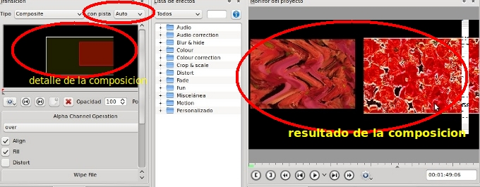

2.1. Aspectos Teóricos

Proyecto 6 - Transiciones
1. Una vez abierto nuestro proyecto4_ejemplo con nuestro editor procederemos a ubicar los clips o fragmentos de forma alterna en las dos pistas de las que disponemos.
Observa que algunos se solapan con los siguientes (los señalados en la imagen) y otros, en cambio, van a continuación del clip anterior.
2. Realizada la modificación en las pistas y línea de tiempo guardamos el proyecto como proyecto6_ejemplo.
3. Hacemos clip en la zona inferior derecha del primer clip (pista 0) para generar una transición con el segundo clip (pista 1).
Por defecto en mi caso se ha aplicado la transición de disolver.
4. Haz clic en la transición (1) y se despliega el apartado de transiciones de la pestaña de archivos de tu proyecto.

- En el tipo podemos elegir cualquiera de las transiciones que nos muestra el menú desplegable.
- El proceso, igualmente, nos pide con cual o cuáles pistas queremos hacer la transición: Auto es con todas las pistas que haya en esa línea de tiempo (zona del deslizador) o indicar una pista determinada.

El efecto darken va permitiendo que la transición haga desaparecer partes o bloques del primer clip de forma aleatoria y, a su vez, van apareciendo bloques o grupos de píxeles del otro clip hasta mostrar el segundo completamente.En algunas transiciones el efecto puede parecer tenebroso.
| Efecto Disolver |
Efecto Dark |
| |
7. A la siguiente unión o transición entre videos aplicaremos el efecto composition. Este efecto, entre otros aspectos, nos permite simular dos pantallas de video al mismo tiempo en nuestro video final.
Observa que el clip (1) se haya en nuestro monitor en la zona superior izquierda y el clip (2) en la zona inferior derecha nuestra pantalla (3).
Las etapas requeridas para realizar el efecto anterior las explicamos en la siguiente tabla:
|
Seleccionamos el o los clips que deseamos realizar una composición. En este caso superponomes parte del segundo clip sobre el primero tal como vemos en la imagen. |
Seleccionamos el clip superior y, utilizando el botón dercho, agregamos la transición Composite. Seleccionamos (2) la transición composite y se nos muestra la zona de composición (3) y parámetros de dicha transición. |
|
utilizando los vértices (señalados en círculo) podemos expandir o contraer el tamaño de nuestra imagen en el monitor de pantalla. Igualmente, podemos desplazar el mismo en diferentes direcciones. |
Añadimos una transición Composite al clip inferior. Modifica el tamaño para ajustarlo al del clip superior y ubica el mismo en la zona derecha de tu pantalla.
|
|
En la pestaña de transiciones de nuestro editor, marcamos la pista en negro (para permitir la transparencia) en el clip superior y dejamos en el clip inferior la pista auto. El resultado de la combinación podría ser de esta forma:

|
|
Si a la anterior transición le añadimos un clip de título y aplicamos sobre este una transición de Composite.
El resultado podría verse de la siguiente forma en nuestro monitor.
Nota: si deseamos poner un clip o una foto de fondo podemos utilizar la propiedad de opacidad (0-opaco y 100-transparente) paa jugar con el valor y producir nuevos efectos. Igualmente, si has utilizado los canales alfa en la edición de imágenes (gimp) podrás hacer uso de los valores alfa.
8. A nuestra próxima transición le aplicaremos la cortinilla o transición clásica: wipe. Si utilizamos el botón derecho para añadir la transición podemos observar que no aparece. Aplicamos cualquiera y, al seleccionar la transición, la modificamos en la pestaña de transiciones.
Para ello elegimos en (1) el tipo wipe (cortinilla). Podemos definir la suavidad (0-100). Este valor nos permite indicar la claridad con la que se mostrará la transición del segundo clip encima del primero. Realizandola cortinila con la forma o imagen elegida (4). Podemos hacer que el efecto sea inverso (3) o la transición se realice de sentido inverso a la cortinilla habitual (5).
Nota: el resto de los efectos se basan en los modos de mezcla utilizados en los programas de edición de imágenes (gimp, Photopshop, etc.).
Ejemplos:
- Mutiply (multiplicar) multiplica los valores de los píxeles de la capa superior con aquellos de la capa subyacente (en nuestro caso en lugar de capas, pistas o clips).
- Divide (Dividir): la imagen resultante es a menudo muy clara, y a veces parece “quemada”.
- Diferencia: sustrae al valor del píxel de la capa superior de el de la capa inferior y toma el valor absoluto del resultado. Independientemente del parecido de las dos capas, el resultado parece bastante extraño. Se puede usar para invertir elementos de una imagen.
- Sustraer (substract): sustrae los valores de píxel de la capa superior de los de la inferior.
- Valor (value): Puede usar este modo para revelar detalles en las áreas oscuras y claras de una imagen sin cambiar la saturación.
- Darken (oscurecer): compara cada componente de cada píxel en la capa superior con el correspondiente de la capa inferior y usa el valor más pequeño en la imagen resultante. Las capas completamente blancas no tienen efecto sobre la imagen final y las completamente negras dan una imagen negra.
- Slide: este efecto permite desplazar la imagen de un clip sobre la pantalla (encima de un segundo clip que hace de fondo).
9. Guarda este proyecto como proyecto6_ejemplo en la carpeta destinada para tal fin en clase.
10. Exporta o genera video con formato PAL, tipo Theora de 720x576
Jo.R.C.A. 2004 - 2011

Edición de Audio y Video con Software Libre by José Ramón Cerdeira Alonso is licensed under a Creative Commons Reconocimiento-No comercial-Compartir bajo la misma licencia 3.0 España License